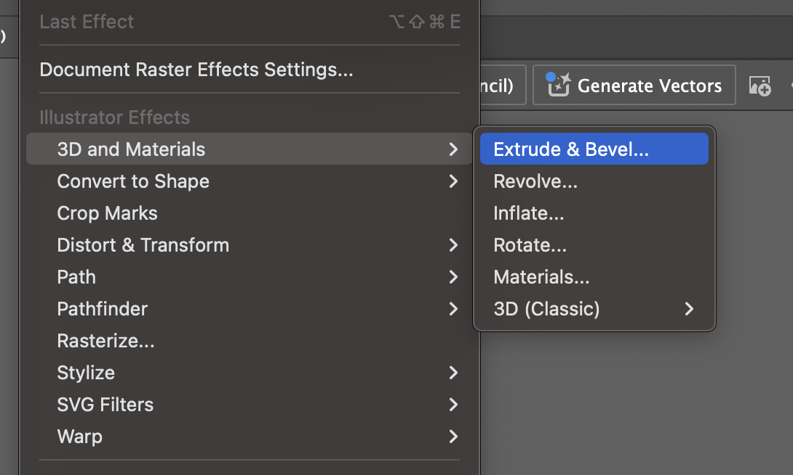
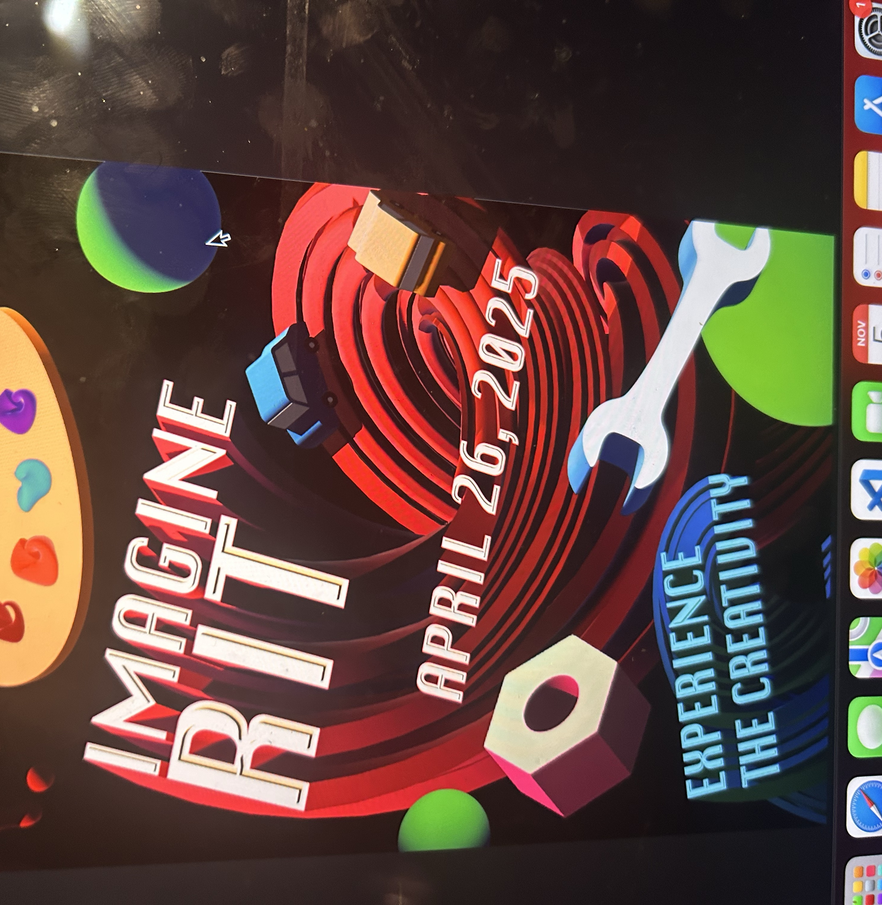

If you aren’t aware, Imagine RIT is a festival that features student projects across all of RIT’s majors, but especially art and engineering. Thousands of families attend each year. Every fall, they hold a poster design contest, and I was a participant.
This is one of my earliest “serious” projects, and for that reason I do not have any sketches. However, I would like to note this was made entirely by playing around with the extrude tool in illustrator. There are no actual 3D renderings in this image.
The piece started with the two spirals of text, which resulted from a lot of experimentation with different settings. My original idea was to make it look like a nebula with stars, but I thought having symbolic objects like wrenches and paint palettes would be a more fitting idea. The green blobs are placeholders for more objects, which ended up being planets.
Although I did not win, I am still very glad I made this, and it’s one of my most cherished personal projects. In 3D, our final project is to make an entry for the 2026 contest, so I will definitely be creating another!